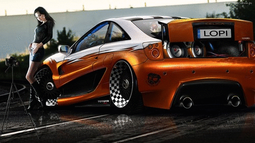

Je¿eli Twoja ¿ona chce siê nauczyæ je¼dziæ samochodem nie stawaj jej na drodze - Sam Levinson
Samochód jest dopiero wtedy szybki, kiedy rano stoisz przed nim i boisz siê go otworzyæ - Walter Röhrl
Taniej jest mieæ 35 samochodów i jedn± kobietê, ni¿ 35 kobiet i jedno auto - Jay Leno
Rozejrza³em siê dooko³a i nie mog³em znale¼æ dla siebie samochodu, o którym marzy³em. Dlatego podj±³em decyzjê, ¿e
zbuduje go sam - Enzo Ferrari
